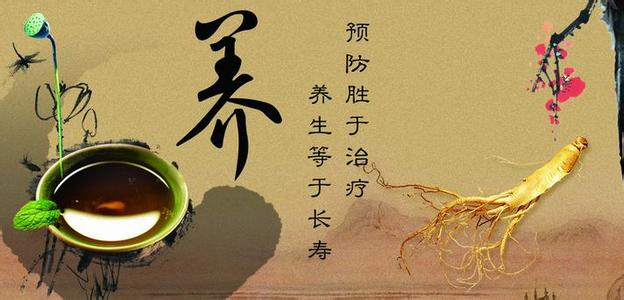
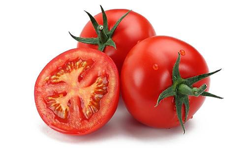
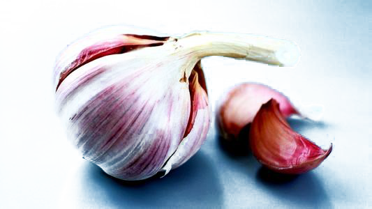
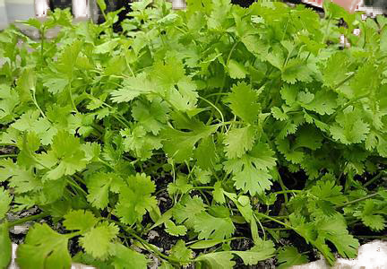
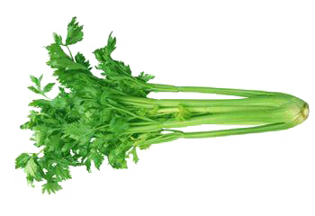
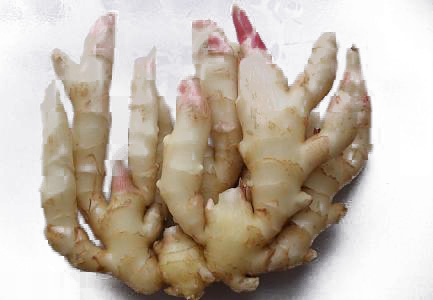
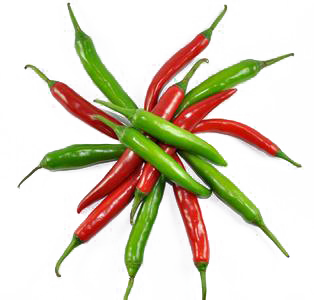
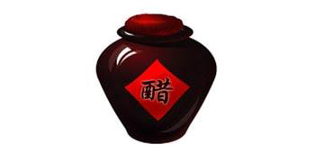

掌握养生妙方，饮食健康事半功倍
食疗养生法简称“食养”。即利用食物来影响机体各方面的功能，使其获得健康或愈疾防病的一种养生方法。俗话也就是通过吃来对我们的身体进行保养。 通常认为，食物是为人体提供生长发育和健康生存所需的各种营养素的可食性物质。也就是说，食物最主要的是营养作用。其实不然，中医很早就认识到食物不仅能营养，而且还能疗疾祛病。如近代医家张锡纯在《医学衷中参西录》中曾指出：食物“病人服之，不但疗病，并可充饥；不但充饥，更可适口，用之对症，病自渐愈，即不对症，亦无他患”。 随着社会的发展，人们越来越讲究养生之道。很多适合养生的食品也随之被推广，常见的有养生杂粮粉，杂粮粥，药膳等等。
西红柿防癌又护肝 据营养学家研究测定，每人每天食用50～100克鲜番茄，即可满足人体对几种维生素和矿物质的需要。番茄含的“番茄素”，有抑制细菌的作用；含的苹果酸、柠檬酸和糖类，番茄富含胡萝卜素、维生素C、维生素B以及维生素B2和钙、磷、钾、镁、铁、锌、铜和碘等多种元素，还含有蛋白质、糖类、有机酸、纤维素。
蒜 外面买回家的卤味，吃前拍两瓣蒜拌一拌已经是常识了吧。大蒜杀虫的能力这里就不赘述了。我们来认识一下大蒜鲜有人知的本领：消积滞。没错，大蒜能治消化不良，尤其是食欲不振和肉食积滞。下次出门吃自助撑到难受，就不用四处找山楂啦，掰两瓣蒜搞定！推荐搞定前再嚼两粒花生米，可以去去嘴里的蒜味儿。
香菜 香菜是厨房里常见的一种绿色蔬菜，爱吃它的人和讨厌它的人一样多。香菜是个好东西啊，上能治感冒下能治脱肛，中间能透痘疹、开胃。当然，也是因为味道过于辛香走窜，和大蒜一起被不少人“嫌弃”。
芹菜 研究发现，芹菜含有“四氯苯酞”化合物，能降低胆固醇。另外，大家对芹菜中的细丝一定不陌生，这就是膳食纤维，可促进胃肠蠕动，排出肠道垃圾。从这两点来看，芹菜可以当之无愧地称为“血液和肠道的清道夫”。不仅如此，芹菜还富含矿物质、维生素C和酚酸，有助于人体抵抗流感、减轻过敏、预防癌症。
肉桂
德国一项针对2型糖尿病患者的最新研究指出，肉桂可降低约10%的血糖、约13%的胆固醇和甘油三酯，因此可在一定程度上减少2型糖尿病患者心脏病发作的风险。肉桂是一味性温的中药，国外已将肉桂作为原料生产膳食补充剂。寒冷的冬天，将肉桂代茶饮用，养生效果很好，但一天摄入量最好不超4克。
姜 姜是一种天然的镇痛剂和解毒剂。美国迈阿密大学最新研究发现，生姜提取物能显著缓解炎症、减轻膝盖关节炎疼痛，每天食用1盎司（约30克）生姜就能起到显著的止痛效果。另外，生姜还有杀死流感病毒、对抗感染、控制胆固醇、降低血压的作用。姜的食用方法丰富多样，炒菜、腌肉、煮泡姜茶均可。生活中，容易晕车、晕船的人，口中含片生姜，能缓解呕吐、头晕、冒冷汗等不适。
辣椒 一个辣椒中包含了B族维生素、维生素C、维生素E、维生素K、胡萝卜素、叶酸等多种维生素，且维生素C含量比橙子和柠檬还多。发表在《英国营养学杂志》的研究发现，吃饭时喜欢加两勺干辣椒粉的女性，比那些不吃辣椒的女性，吸收的热量和脂肪要少得多，身材更苗条。美国南卡罗来纳大学研究指出，辣椒含姜黄素，能帮助肌肉在运动后恢复，可强健肌肉。辣椒还含有植物中最强的抗氧化剂之一番茄红素，防癌功效显著。
食醋 食醋中含有0.4%～0.6%的醋酸成分，可以在一定程度上抑制多种病菌的生长和繁殖。所以，在本地细菌和病毒类疾病流行的时候，人们可以在炒菜、拌凉菜时添加适量的醋，这样既可以开胃增食，又可以抑菌，可以说是“一石二鸟”。
Copyright © 2017 | 陕ICP备05001616号 | 陕西省，西安市碑林区，西安理工大学金花校区 王小改